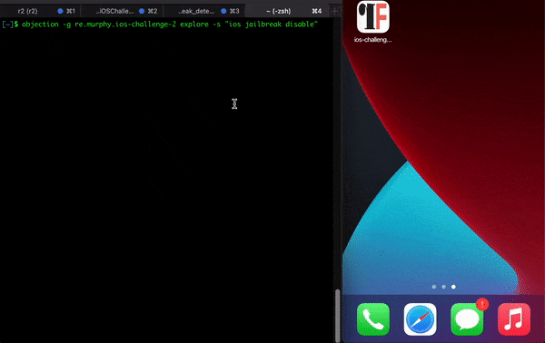
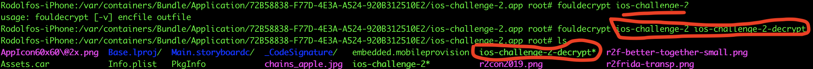
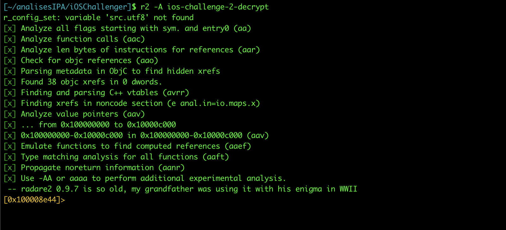
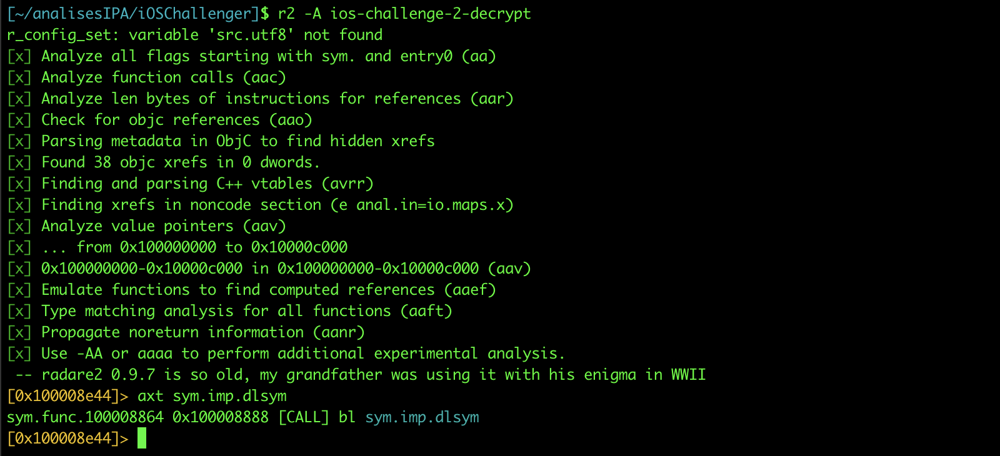
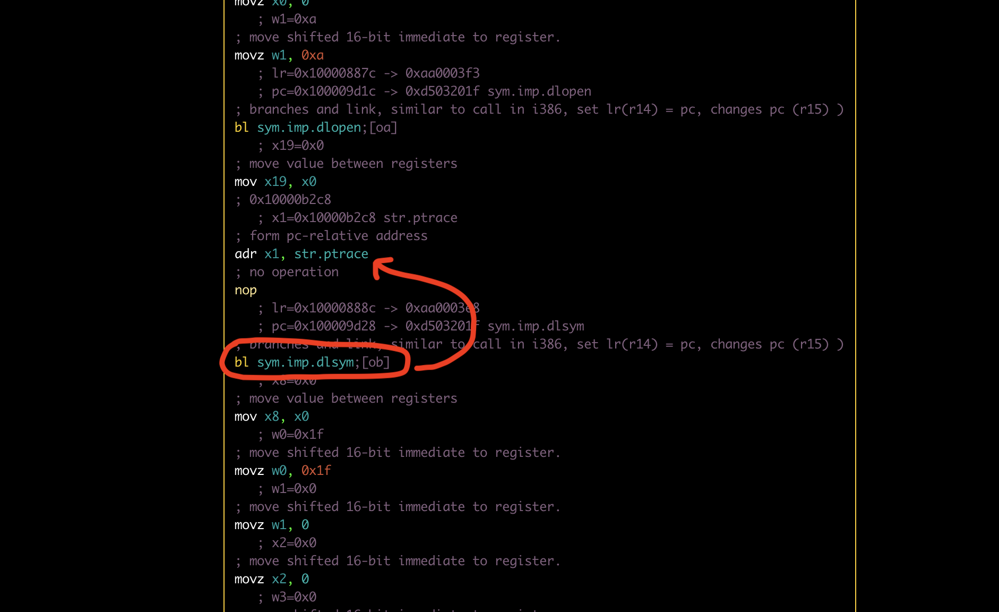
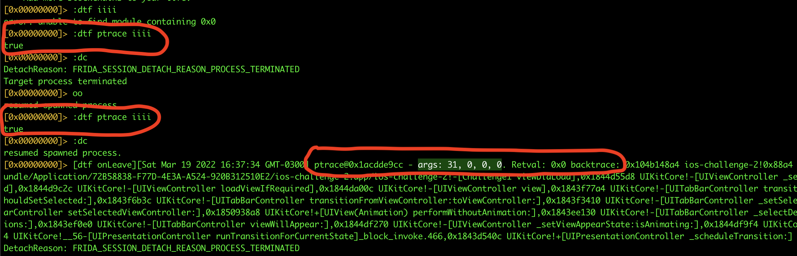
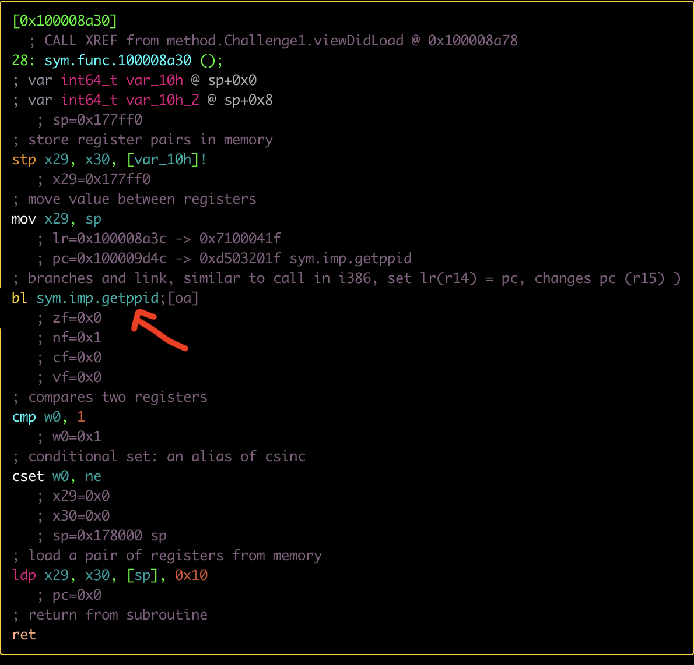
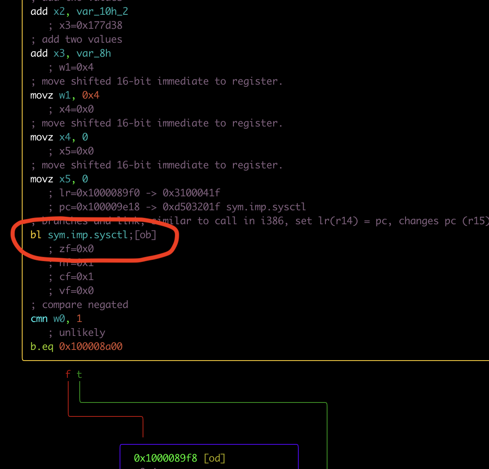
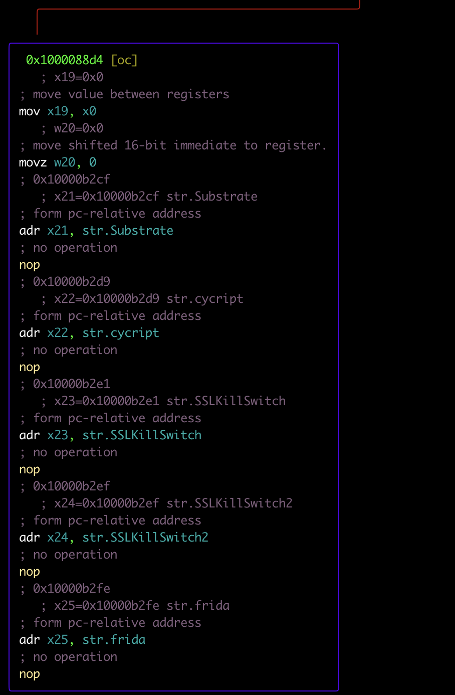
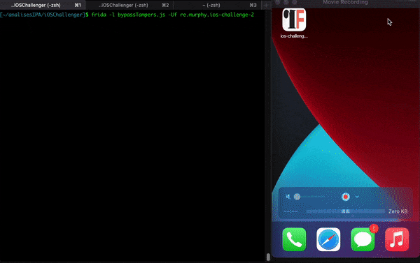

opcod3r's blog
Infosec/Dev/CC Things
Hi everyone, in this blog i’m going to explain a little bit of my journey to solve a iOS challenge proposed by @as0ler. The Challenge can be found at the following link:
The challenge is to remove all anti-tamper methods, that means you will have to remove some methods such as:
- ptrace
- sysctl
- strstr
- geppid
In this blog, I will only talk about how I did it to bypass, using only frida with radare2. So let’s go.
If you try to run the app using tools like objection and try to use methods to bypass jailbreak you will not be able to bypass, as there are mechanisms that block certain syscalls (anti-tampers) . The following GIF illustrates the attempt to open the app with objection:

We can use several different methods here, we already have the .ipa that contains the binary inside, so we can throw it on radare2 and thus identify the functions that are being called/executed
.ipa is a .zip file, so just unzip it like a normal .zip
It’s worth mentioning here that a more realistic scenario, where you don’t have this .ipa but have the jailbroken device. You can use the tool https://github.com/NyaMisty/fouldecrypt, to get the decrypted binary.

Taking the binary, we can pass it to our machine using the scp command. Next step is to use radare2 to analyze the binary and look for possible dlsym calls. To analyze the binary on radare2 we use the command below:
r2 -A <binaryDecrypted>

What is dlsym ?
dlsym() returns the address of the code or data location specified by the
null-terminated character string symbol. Which libraries and bundles are
searched depends on the handle parameter.
To check the dlsym calls we use the command below:
axt sym.imp.dlsym

As can be seen in the image above, there is a call at address 10008864, let’s go to that address and check:
s sym.func 10008864

After analyzing the calls, we can see that there is a direct call to ptrace. We can use r2frida, and use the dtf utility from r2frida, to check the call being made at runtime. Using the commands bellow
r2 frida://spawn/usb//re.murphy.ios-challenge-2
:dtf ptrace iiii
:dc

Let’s analyze this call to ptrace, as we can see 3 arguments being used. Ptrace was called at runtime so we should bypass, let’s code a bypass using frida.
const isPtrace = Module.findExportByName(null, 'ptrace');
Interceptor.attach(isPtrace, {
onEnter: function(args) {
let arg0 = args[0];
let arg1 = args[1];
let arg2 = args[2];
console.log('> ptrace was called\n');
console.log('> Arg0 value is: ' + arg0[0] + "\n")
console.log('> Arg1 value is: ' + arg1[1] + "\n")
console.log('> Arg2 value is: ' + args[2] + "\n")
args[0] = ptr(-1)
console.log('> Modified args 0 ' + args[0] + ' Args 1 ' + args[1] + ' Args 2 ' + arg2[2])
}
});
The next step is bypass getppid, but what is getppid ?
What is getppid ?
returns the process ID of the parent of the calling process
Checking the disassembler it is possible to verify the call to getppid:

Checking, we can analyze that it is just a comparison, between:
cmp w0,1
The frida script bellow can be used to bypass the getppid call:
const isGetppid = Module.findExportByName(null, "getppid")
Interceptor.attach(isGetppid, {
onLeave: function(retval) {
console.log('> getppid was called\n')
console.log('> getppid value before: ' + retval)
retval.replace(0x01)
console.log('> getppid value after: ' + retval)
}
})
Walking through the app’s execution flow, you can check the use of sysctl, which can also be used as a form of anti-tampering

What is systctl ?
The sysctl() function retrieves system information and allows processes
with appropriate privileges to set system information. The information
available fromsysctl() consists of integers, strings, and tables.
The frida script to bypass the sysctl call:
const isSysCtl = Module.findExportByName(null, "__sysctl")
Interceptor.attach(isSysCtl, {
onEnter: function(args) {
this.info = this.context.x2;
},
onLeave: function(retval) {
const pointer01 = this.info.add(32)
const pointerFlag = pointer01.readInt() & 0x800;
if (pointerFlag === 0x800 ) {
console.log('> __sysctl was called and was disabled')
pointer01.writeInt(0)
}
}
})
The last check that the app uses as anti-tampering is to check if there are any Libs or apps for data manipulation at runtime, such as frida, SSLKillSwitch etc. The strstr utility is usually used to check this series of strings at runtime. What is strstr ?
The strstr() function locates the first occurrence of the null-terminated
strings2 in the null-terminated strings1.
The image below illustrates the checks:

The frida code to bypass strstr:
const tamperLibs = [
"Substrate",
"cycript",
"frida",
"SSLKillSwitch2",
"SSLKillSwitch"]
const ptrStrStr = Module.findExportByName(null, 'strstr');
Interceptor.attach(ptrStrStr, {
onEnter: function (args) {
let index = tamperLibs.length;
this.libIsTampared = false;
while (index--) {
var lib = args[1].readUtf8String();
if (lib == tamperLibs[index]) {
console.log("> strstr called: " + lib + " overwrite return");
this.libIsTampared = true;
}
}
},
onLeave: function (retval) {
if (this.libIsTampared) {
retval.replace(0x00);
}
}
});
After all those steps, it is possible to move on to the next phase of the challenge that I will write about (second part). The following gif illustrates the completed bypass using the script:

Bye ! see u next time !